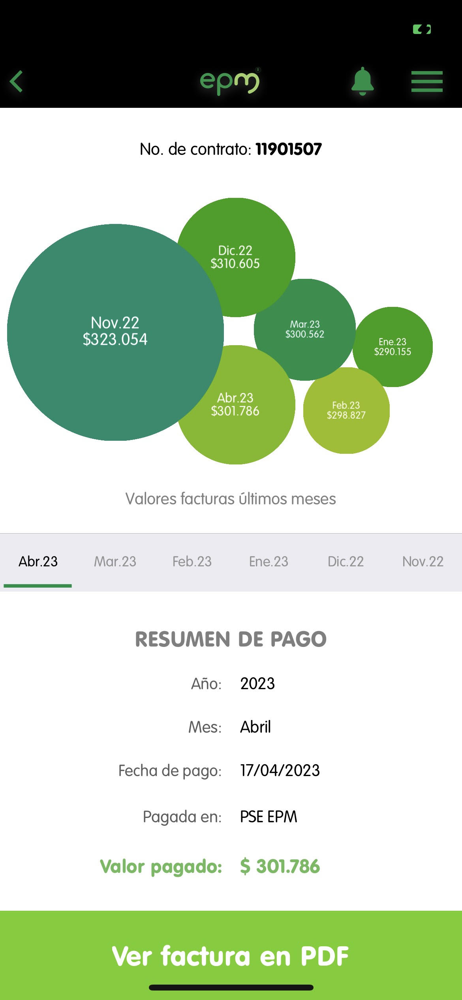

By:Isabella Ocampo Sánchez

Linear regression: kWh vs Month
This second part of the project must be done individual. For each plot, we
show evidence about our bill house public services to proof the information.
About the observed behavior
According to the collected data from the plot, explain why the graphic
displays that behavior in terms of:
-
In the graph it is possible to show how in the month 1 (December) the
highest value (111 kWh) for energy consumption was obtained, but the
following month it fell approximately 9 # kWh, with a value of (102kWh),
However again it began to rise from 2 or 3 kWh each month to the current
one, being very close to the initial range.
-
The relationship between points and colors is considerably different, since
linear regression (gray) is on the rise but almost constant, while true
consumption (red), rises with much difference between them.
-
According to Use Latex formula y=0.30*6+105.90 the energy that we are gonna
consume in the next month is 107.7 whz $$ y = 0.30 \cdot 6 + 105.90 $$ $$ y
= 107.7 $$
-
In conclusion, the energy consumption in the home should be at least similar
to linear regression, since it remains during the passage of months, however
we could reduce it even more and thus improve expenses, identifying that
artifacts and excessive actions are harming it.
Linear regression: Residents vs kWh
About the observed behavior
According to the collected data from the plot, explain why the graphic
displays that behavior in terms of:
-
In the graph, with respect to the linear regression line, an increase in
energy consumption can be observed according to the residents of each
household. Because, the more people there are, the greater the consumption
energy expenditure, or the fewer individuals are, the consumption will
decrease, and subsequent to it the cost to pay. On the other hand, in homes
where 3 or 4 residents live, it can be observed that energy consumption
varies, depending on the time in which people stay in the house and the care
they give to the energy.
-
The relationship between the green and gray points is that in the former the
real data is evidenced; that is, the consumption of each family; and the
gray points reflect the proposed regression line.
-
According to Use Latex formula y=101.14*200+(-242.17) the energy that 200
people are gonna consume in the next month is 19985.83 whz $$ y = 101.14
\cdot 200 + (-242.17) $$ $$ y = 19985.83 $$
-
In conclusion, according to the data provided and the linear regression
graph, we can verify the fact that in households where there are 3 and 4
residents the energy consumption is similar. This small change is due to
activities that are carried out with energy; for example in some homes there
are people who do telework, while in others all people are kept more out of
home, so the energy consumption will be lower. Likewise, energy expenditure
will increase progressively according to the number of residents of each
household.